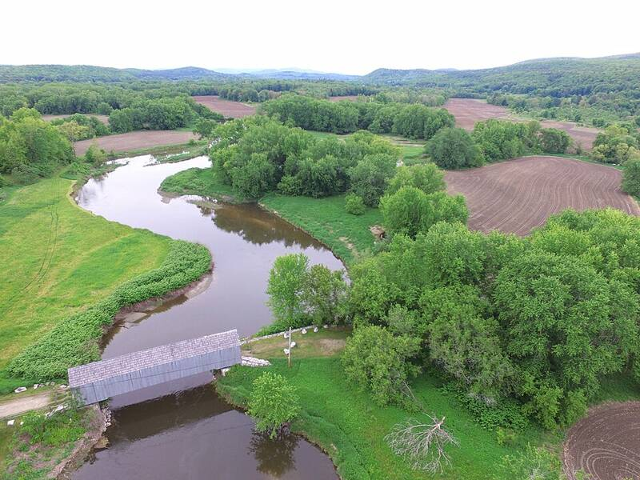

Berkshire UFO incident
Sheffield, Massachusetts, September 1, 1969

On Labor Day night, 1969, Thomas Reed and his family said a disc-shaped craft hovered over the Old Covered Bridge across the Housatonic River in Sheffield, followed their car, and pulled them aboard. Another family reported a similar encounter at Lake Mansfield in Great Barrington, and supporters say more than 250 people saw the object. Reed reportedly passed a polygraph, the town built a memorial park in 2015, and a governor's citation was later issued, though Governor Charlie Baker's office said it was signed in error. Skeptics note that no police or news report from the time has been found. The pin marks the approximate bridge location. 1
Open in the interactive Watcher